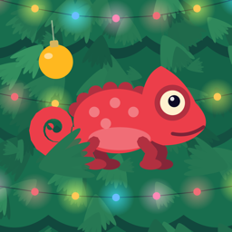

Chameleon Christmas
A chameleon is hiding in the Christmas tree. Find him, hang the ornaments, and light up the tree.
A gentle hidden-object game for iPhone and iPad. No ads, nothing to buy, no internet needed, and it collects no data.

A chameleon is hiding in the Christmas tree. Find him, hang the ornaments, and light up the tree.
A gentle hidden-object game for iPhone and iPad. No ads, nothing to buy, no internet needed, and it collects no data.